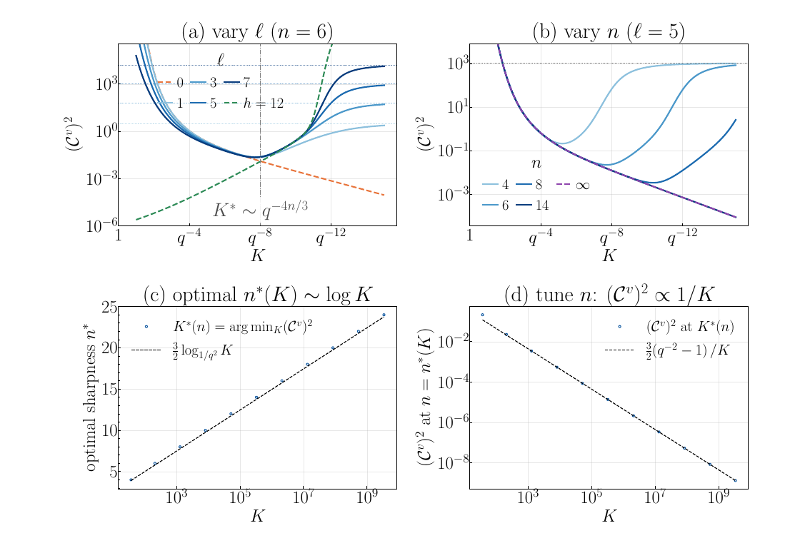

Figure 2
Hierarchical Prototype Emergence in Modern Hopfield Models
现代 Hopfield 模型中层级原型的涌现
Figure 2（PDF物理p3）四面板：横轴为分支数 \(K\)，(a,b,\(d\))纵轴为能隙相对方差 \((C^v_\ell)^2\)，(c)为优化的阶数 \(n^*\)。(a)固定 \(n=6,h=12\) 改变深度，(b)固定 \(\ell=5\) 改变阶数；(c,\(d\))显示调阶数后的 \(n^*\sim\log K\) 与 \((C^v)^2\propto1/K\)。曲线来自理论近似，不能单独认证有限样本吸引域或一棵树所有原型同时稳定。原图：Aditya Cowsik、Adithya Sriram，CC BY 4.0，https://arxiv.org/abs/2609.12079v1；仅裁去周围页面文字，保留全部四面板与图例。